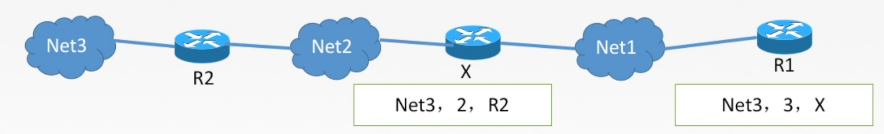

1.路由算法
路由器转发分组是通过
路由表转发的，而路由表是通过各种算法得到的。从能否随网络的通信量或拓扑自适应地进行调整变化来划分，路由算法可分为两大类：静态路由与动态路由。最佳路由：“最佳”只能是相对于某一种特定要求下得出的较为合理的选择而已。
1.1静态路由算法（非自适应路由算法）
管理员手工配置路由信息
简单、可靠，在负荷稳定、拓扑变化不大的网络中运行效果很好，广泛用于告诉安全性的军事网络和较小的商业网络。
路由更新慢，不适用于大型网络。
1.2自适应路由算法（自适应路由算法）
路由器间彼此交换信息，按照路由算法优化出路由表项。
路由更新快，适用于大型网络，及时响应链路费用或网络拓扑变化。
算法复杂，增加网络负担。
（1）全局性
所有路由器掌握完整的网络拓扑和链路费用信息。
例如：链路状态路由算法 OSPF
（2）分散性
路由器只掌握物理相连的邻居及链路费用
例如：距离向量路由算法 RIP
2.分层次的路由选择协议
2.1原因
- 因特网规模很大
- 许多单位不想让外界知道自己的路由选择协议，但还想连入因特网
2.2自治系统AS
在单一的技术管理下的一组路由器，而这些路由器使用一种AS内部的路由选择协议和共同的度量以确定分组在该AS内的路由，同时还使用一种AS之间的路由协议以确定在AS之间的路由。
一个AS内的所有网络都属于一个行政单位来管辖，一个自治系统的所有路由器在本自治系统内都必须连通。
2.3分类
（1）内部网关协议IGP
一个AS内使用的，RIP、OSPF
（2）外部网关协议EGP
AS之间使用的，BGP
3.路由信息协议: RIP协议
RIP是一种分布式的基于距离向量的路由选择协议，是因特网的协议标准，最大优点是简单。
RIP协议要求网络中每一个路由器都维护从它自己到其他每一个目的网络的唯一最佳距离记录（即一组距离）。
距离：通常为“跳数”，即从源端口到目的端口所经过的路由器个数，经过一个路由器跳数+1。特别的，从一路由器到直接连接的网络距离为1。RIP允许一条路由最多只能包含15个路由器，因此距离为16表示网络不可达。
RIP协议只适用于小互联网
示例：
3.1 RIP协议和谁交换？多久交换？交换什么？
- 仅和相邻路由器交换信息；
- 路由器交换的信息是自己的路由表；
- 每30s 交换依次路由信息，然后路由器根据新信息更新路由表。若超过180s没有收到邻居路由器的通告，则判定邻居没了，并更新自己路由表。
路由器刚开始工作时，只知道直接连接的网络距离（距离为1），接着每一个路由器也只和数目非常有限的相邻路由器交换并更新路由器信息。
经过若干次更新后，所有路由器最终都会知道本自治系统中任何一个网络的最短距离和下一跳路由器的地址，即“收敛”。
3.2距离向量算法
- 修改相邻路由器发来的RIP报文中所有表项。对地址为X的相邻路由器发来的RIP报文，修改报文中的所有项目：把“下一跳”字段中的地址改为X，并把所有的“距离”字段+1。
 - 对修改后的RIP报文中的每个项目，进行以下步骤：
- R1路由表中若没有Net3，则把该项目填入R1路由表
- R1路由表中若有Net3，则查看下一跳路由器地址：
- 若下一跳是X，则用收到的项目替换原路由表中的项目；
- 若下一跳不是X，原来距离比X走的距离远则更新，否则不作处理。
- 若180s还没收到相邻路由器X的更新路由表，则把X记为不可达的路由器，即把路由器距离设置为16.
- 返回
3.3 示例
（1）Sample 1
已知路由器R6的路由表，现收到相邻路由器R4发来的路由更新信息，试更新路由器R1的路由表：
（2）Sample 2
考虑如图所示的子网，该子网使用了距离一向量算法，下面的向量刚刚到达路由器C：来自B的向量为（5，0，8，12，6，2）；来自D的向量为（16，12，6，0，9，10）；来自E的向量为（7，6，3，9，0，4)。经过测量，C到B、D和E的延迟分别为6，3和5，那么C到达所有结点的最短路径是（）·
- (5, 6, 0, 9, 6, 2)
- (11, 6, 0, 3, 5, 8)
- (5, 11, 0, 12, 8, 9）
- (11, 8, 0, 7, 4, 9）
3.4 RIP协议的报文格式
RIP是应用层协议，使用UDP传送数据
一个RIP报文最多可包括25个路由，如超过，必须再用一个RIP报文传送
3.5 RIP协议好消息传得快，坏消息传得慢
特点：当网络出现故障时，要经过比较长的时间（例如数分钟）才能将此信息传送到所有的路由器，“慢收敛”。
这样不断更新下去，直到R1和R2到网1的距离都增大到16时，R1和R2才知道网1是不可达的。
4.开放最短路径优先协议: OSPF协议
开放最短路径优先OSPF协议：“开放”标明OSPF协议不是受某一家厂商控制，而是公开发表的；“最短路径优先”是因为使用了Dijkstra提出的最短路径算法SPF。
OSPF最主要的特征就是使用分布式的链路状态协议。
4.1 OSPF的特点
- 使用洪泛法向自治系统内所有路由器发送信息，即路由器通过输出端口向所有相邻的路由器发送信息，而每一个相邻路由器又再次将此信息发往其所有的相邻路由器。广播 - 最终整个区域内所有路由器都得到了这个信息的一个副本。
- 发送的信息就是与本路由器相邻的所有路由器的链路状态（本路由器和哪些路由器相邻，以及该链路的度量/代价一一费用、距离、时延、带宽等）。
- 只有当链路状态发生变化时，路由器才向所有路由器洪泛发送此信息。
- 最后，所有路由器都能建立一个链路状态数据库，即全网拓扑图
4.2 链路状态路由算法
- 每个路由器发现它的邻居结点【HELLO问候分组】，并了解邻居节点的网络地址。
- 设置到它的每个邻居的成本度量metric。
- 构造【DD数据库描述分组】，向邻站给出自己的链路状态数据库中的所有链路状态项目的摘要信息。
- 如果DD分组中的摘要自己都有，则邻站不做处理；如果有没有的或者是更新的，则发送【LSR链路状态请求分组】，请求自己没有的和比自己更新的信息。
- 收到邻站的LSR分组后，发送【LSU链路状态更新分组】进行更新。
- 更新完毕后，邻站返回一个【LSAck链路状态确认分组】进行确认。
只要一个路由器的链路状态发生变化：
5. 泛洪发送【LSU链路状态更新分组】进行更新。
6. 更新完毕后，其他站返回一个【LSAck链路状态确认分组】进行确认。
7. 使用Dijkstra根据自己的链路状态数据库构造到其他节点间的最短路径。
4.3 OSPF的区域
为了使OSPF能够用于规模很大的网络，OSPF将一个自治系统再划分为若干个更小的范围，叫做区域。
每一个区域都有一个32位的区域标识符（用点分十进制表示）。
区域也不能太大，在一个区域内的路由器最好不超过200个。
这些区域也有层次之分。处在上层的域称为主干区域，负责连通其他下层的区域，并且还连接其他自治域。
4.4 OSPF分组
OSPF直接用IP数据报传送。
4.5 OSPF其他特点
- 每隔30min，要刷新一次数据库中的链路状态。
- 由于一个路由器的链路状态只涉及到与相邻路由器的连通状态，因而与整个互联网的规模并无直接关系。因此当互联网规模很大时，OSPF协议要比距离向量协议RIP好得多。
- OSPF不存在坏消息传的慢的问题，它的收敛速度很快。
5.边界网关协议: BGP协议
5.1概述
和谁交换：与其他AS的邻站BGP发言人交换信息
交换什么：交换的网络可达性的信息，即要到达某个网络所要经过的一系列AS
多久交换：发生变化时更新有变化的部分
5.2 BGP协议交换信息的过程
BGP所交换的网络可达性的信息就是要到达某个网络所要经过的一系列AS。当BGP发言人互相交换了网络可达性的信息后，一个BGP发言人就根据所采用的策略从收到的路由信息中找到到达各AS的较好路由。
BGP发言人交换路径向量：
- 自治系统AS2的BGP发言人通知主干网AS1的BGP发言人：“要达到网络N1、N2、N3和N4可经过AS2”.
- 主干网络还可发出通知：“要到达网络N5、N6和N7可沿路径（AS1、AS3）”。
5.3 BGP协议报文格式
一个BGP发言人与其他自治系统中的BGP发言人要交换路由信息，就要先建立TCP连接，即通过TCP传送，然后在此连接上交换BGP报文以建立BGP会话，利用BGP会话交换路由信息。
BGP是应用层协议，借助TCP传送。
5.4 BGP协议特点
BGP支持CIDR，因此BGP的路由表也就应当包括目的网络前缀、下一跳路由器，以及到达该目的网络所要经过的各个自治系统序列。
在BGP刚刚运行时，BGP的邻站是交换整个的BGP路由表。但以后只需要在发生变化时更新有变化的部分。这样做对节省网络带宽和减少路由器的处理开销都有好处。
5.5 BGP-4的四种报文
- OPEN（打开）报文：用来与相邻的另一个BGP发言人建立关系，并认证发送方。
- UPDATE（更新）报文：通告新路径或撤销原路径。
- KEEPALlVE（保活）报文：在无UPDATE时，周期性证实邻站的连通性；也作为OPEN的确认。
- NOTIFICATION（通知）报文：报告先前报文的差错：也被用于关闭连接。
6.三种路由协议比较
RIP是一种分布式的基于距离向量的内部网关路由选择协议，通过广播UDP报文来交换路由信息。
OSPF是一个内部网关协议，要交换的信息量较大，应使报文的长度尽量短，所以不使用传输层协议（如UDP或TCP)，而是直接采用IP。
BGP是一个外部网关协议，在不同的自治系统之间交换路由信息，由于网络环境复杂，需要保证可靠传输，所以采用TCP。